The following pictures show n equilateral triangles with side 1 packed inside the smallest known square (of side length s).
1.
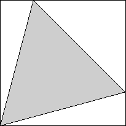
2.
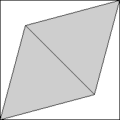
3.
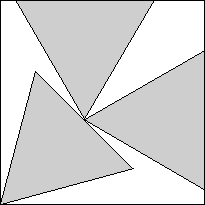
s = (√2 + √6) / 4 = .965+
Trivial.
s = √6/2 = 1.224+
Trivial.
s = √3/2 + √6/4 = 1.478+
Found by Erich Friedman
in 1996.
4.
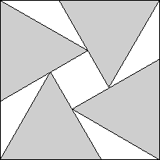
5.
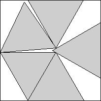
6.
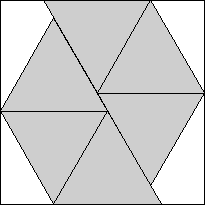
s = 1 + 1 / √3 = 1.577+
Found by Erich Friedman
in 1996.
s = 1.803+
Found by Erich Friedman
in 1996.
s = 9 / 2 - 3 √3 / 2 = 1.901+
Found by Erich Friedman
in 1996.
7.
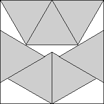
8.
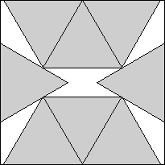
9.
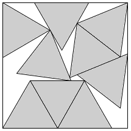
s = 2
Found by Erich Friedman
in 1996.
s = 3 √3 / 2 - 1 / 2 = 2.098+
Found by Erich Friedman
in 1996.
s = 2.287+
Found by Maurizio Morandi
in July 2008.
10.
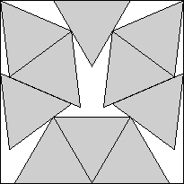
11.
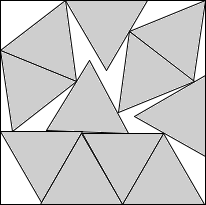
12.
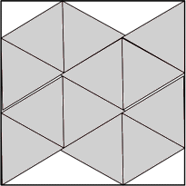
s = 2.377+
Found by David W. Cantrell
in July 2002.
s = 2.490+
Found by Maurizio Morandi
in June 2008.
s = 2.559+
Found by Timo Berthold, et al
in January 2026.
13.
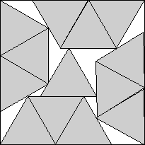
14.
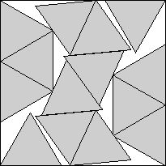
15.
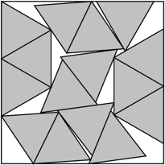
s = 2.595+
Found by David W. Cantrell
in July 2002.
s = 2.726+
Found by David W. Cantrell
in July 2002.
s = 2.830+
Found by Maurizio Morandi
in July 2008.
16.
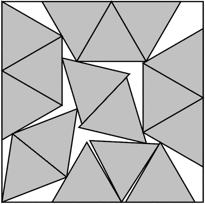
17.
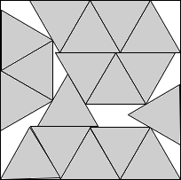
18.
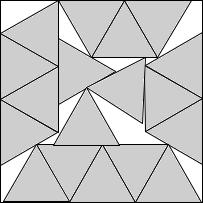
s = 2.900+
Found by Maurizio Morandi
in July 2008.
s = 2.982+
Found by Maurizio Morandi
in July 2008.
s = 3.051+
Found by Maurizio Morandi
in July 2008.
19.
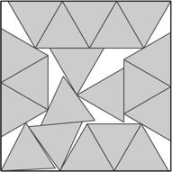
20.
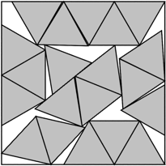
21.
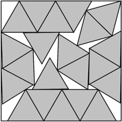
s = 4 - √3 / 2 = 3.133+
Found by Maurizio Morandi
in July 2008.
s = 3.233+
Found by Károly Hajba
in August 2008.
s = 10√3 - 14 = 3.320+
Found by Maurizio Morandi
in July 2008.
22.
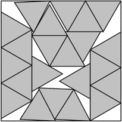
s = 3.378+
Found by David W. Cantrell
in August 2012.
23.
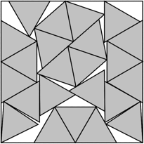
s = 3.436+
Found by Maurizio Morandi
in August 2008.
24.
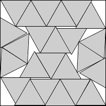
s = 3.468+
Found by Maurizio Morandi
in August 2008.
25.
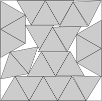
s = 3.537+
Found by David W. Cantrell
in August 2012.
26.
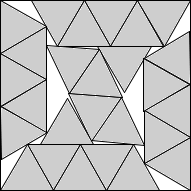
s = 3.575+
Found by Maurizio Morandi
in September 2008.
27.
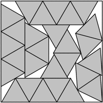
s = 3.675+
Found by Maurizio Morandi
in September 2008.